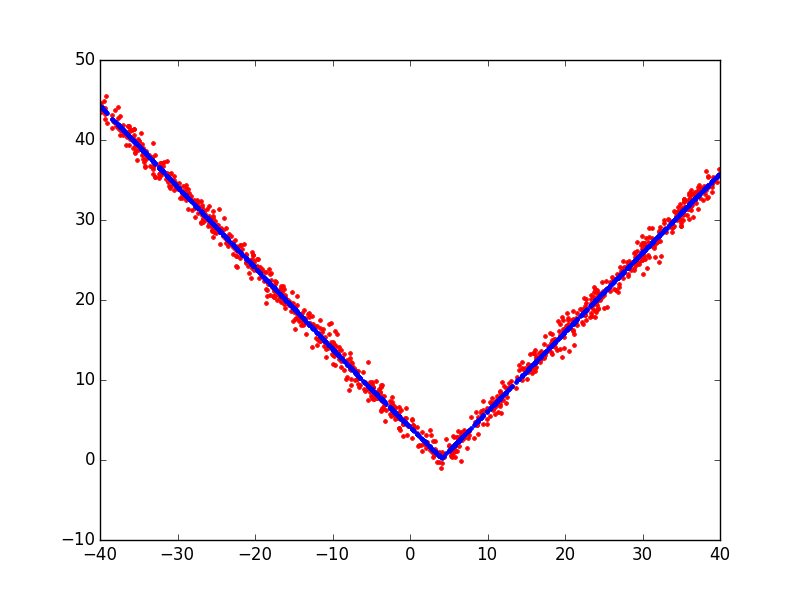

Plotting the absolute value function¶
A simple example plotting a fit of the absolute value function.
Script output:
Forward Pass
--------------------------------------------------------------------
iter parent var knot mse terms gcv rsq grsq
--------------------------------------------------------------------
0 - - - 135.278633 1 135.550 0.000 -0.000
1 0 6 441 0.936859 3 0.954 0.993 0.993
2 0 6 569 0.920706 5 0.953 0.993 0.993
--------------------------------------------------------------------
Stopping Condition 2: Improvement below threshold
Pruning Pass
-------------------------------------------------
iter bf terms mse gcv rsq grsq
-------------------------------------------------
0 - 5 0.92 0.953 0.993 0.993
1 3 4 0.92 0.945 0.993 0.993
2 4 3 0.94 0.954 0.993 0.993
3 1 2 84.09 84.932 0.378 0.373
4 2 1 135.28 135.550 0.000 -0.000
-------------------------------------------------
Selected iteration: 1
Earth Model
-------------------------------------
Basis Function Pruned Coefficient
-------------------------------------
(Intercept) No 0.242151
h(x6-4.071) No 0.991805
h(4.071-x6) No 0.949437
h(x6+5.756) Yes None
h(-5.756-x6) No 0.0642164
-------------------------------------
MSE: 0.9207, GCV: 0.9451, RSQ: 0.9932, GRSQ: 0.9930
Python source code: plot_v_function.py
import numpy
import matplotlib.pyplot as plt
from pyearth import Earth
# Create some fake data
numpy.random.seed(2)
m = 1000
n = 10
X = 80 * numpy.random.uniform(size=(m, n)) - 40
y = numpy.abs(X[:, 6] - 4.0) + 1 * numpy.random.normal(size=m)
# Fit an Earth model
model = Earth(max_degree=1)
model.fit(X, y)
# Print the model
print(model.trace())
print(model.summary())
# Plot the model
y_hat = model.predict(X)
plt.figure()
plt.plot(X[:, 6], y, 'r.')
plt.plot(X[:, 6], y_hat, 'b.')
plt.show()
Total running time of the example: 0.10 seconds ( 0 minutes 0.10 seconds)